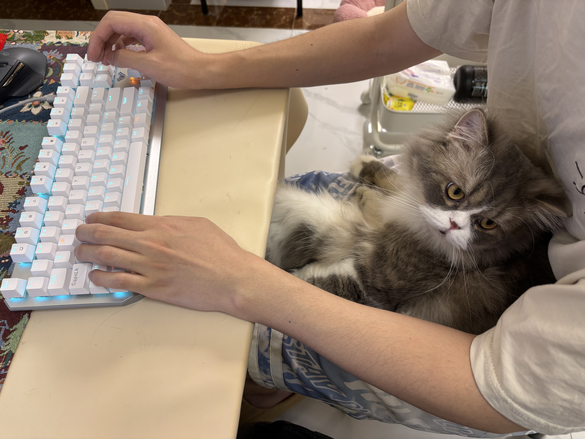

01DAC 2025 · Accepted
Understanding power
through multiple views.
Multimodal static IR-drop prediction that combines netlist and layout information to study power integrity.
RESEARCH · CODE · CURIOSITY
I explore how machine learning can help us design and manufacture better chips.
M.S. student at ShanghaiTech University.
Working where algorithms meet the physical world.

01 / A LITTLE ABOUT ME

I'm Kai Ma, a master's student in Electronic Science and Technology at ShanghaiTech University, advised by Dr. Hao Geng.
My work brings together machine learning and electronic design automation. I study how information from netlists, layouts, and manufacturing processes can help models understand chip design.
Recently, I've been working on computational lithography, differentiable simulation, and multimodal learning. I also contribute to TorchLitho, an open-source framework for differentiable computational lithography.
02 / SELECTED WORK
From learning chip layouts
to modelling how they're made.
Multimodal static IR-drop prediction that combines netlist and layout information to study power integrity.
Multimodal mask process correction, with sub-nanometer edge placement error accuracy.
Differentiable mask process correction and shot fracturing. Connecting optimization with mask manufacturing.
Differentiable multimodal mask rule checking. Modelling manufacturing constraints.
Ariadne's Thread — a multimodal computational-lithography benchmark, accepted at ICCAD 2026.
OmniShot — research on shot-centric mask–wafer co-optimization and differentiable simulation.
03 / THE JOURNEY SO FAR
A foundation in electronics.
A growing curiosity about intelligent design.
2024 — PRESENT
M.S. in Electronic Science and Technology
Advised by Dr. Hao GengGRADUATED 2024
B.S. in Electronic Science and Technology
04 / SAY HELLO
Have a question about my work or an idea to share?
I'd be happy to hear from you.